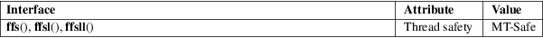

ffs, ffsl, ffsll − find first bit set in a word
Standard C library (libc, −lc)
#include <strings.h>
int ffs(int i);
#include <string.h>
int
ffsl(long i);
int ffsll(long long i);
Feature Test Macro Requirements for glibc (see feature_test_macros(7)):
ffs():
Since glibc 2.12:
_XOPEN_SOURCE >= 700
|| ! (_POSIX_C_SOURCE >= 200809L)
|| /* glibc >= 2.19: */ _DEFAULT_SOURCE
|| /* glibc <= 2.19: */ _BSD_SOURCE || _SVID_SOURCE
Before glibc 2.12:
none
ffsl(),
ffsll():
Since glibc 2.27:
_DEFAULT_SOURCE
Before glibc 2.27:
_GNU_SOURCE
The ffs() function returns the position of the first (least significant) bit set in the word i. The least significant bit is position 1 and the most significant position is, for example, 32 or 64. The functions ffsll() and ffsl() do the same but take arguments of possibly different size.
These functions return the position of the first bit set, or 0 if no bits are set in i.
For an explanation of the terms used in this section, see attributes(7).

BSD systems have a prototype in <string.h>.
|
ffs() |
POSIX.1-2001, POSIX.1-2008, 4.3BSD. |
|||
|
ffsl() |
ffsll()
GNU.
memchr(3)